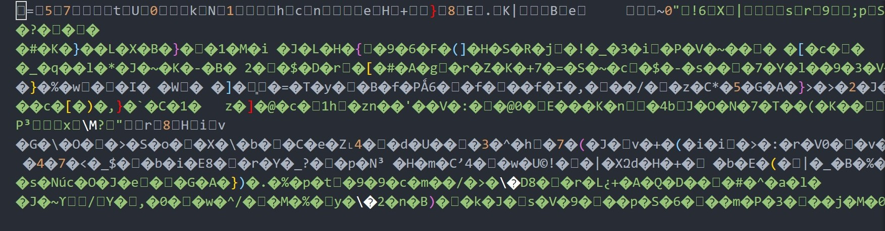
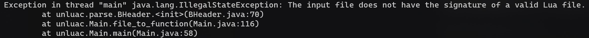
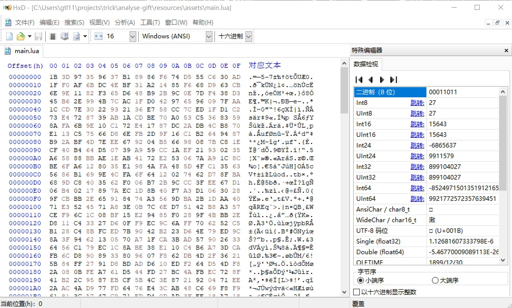
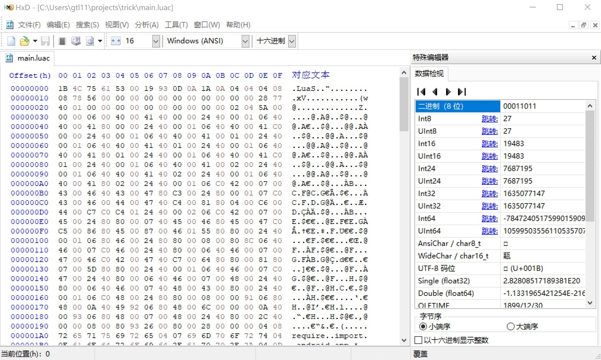

当发现lua文件才是本体后，接下来的步骤就是解析lua文件，但预料之中这个过程远比我预想的要困难
尝试直接打开lua文件
我们先尝试直接打开main.lua:
???
lua不是门脚本语言吗，为什么像用记事本打开二进制文件一样的全是乱码？
一通Google之后，我发现原来lua是可以编译为字节码的，编译后文件叫做luac。
那么反编译不就行了？
尝试反编译
于是我用unluac反编译时，得到了这个：
意思是这不是luac文件喽？
二进制文件的文件头都会标注文件类型，那用16进制编辑器打开看看：
没有文件头？
既然没有文件头，程序却能以lua文件运行，那只能说明被加密了。
解密luac文件
但我在外壳程序怎么都找不到解密的代码。
绝望的我只好上知乎寻找已经逆向成功的大佬。
幸好，一位好心的大佬一语点醒梦中人：
请无视那个“2条回复”。第二条是我成功后对他的感谢
那意思是这个apk和去年那个几乎一样喽？
不管了先试试吧。
于是经过一下午的百度后，我找到了这篇文章：
这位博主根据壳里的解密代码写了一个程序：
1
2
3
4
5
6
7
8
9
10
11
12
13
14
15
16
17
18
19
20
21
22
23
24
25
26
27
28
29
30
31
32
33
34
35
36
37
38
| #include <stdio.h>
#include <stdlib.h>
#include <string.h>
unsigned char *decrypt(const unsigned char *buff, size_t size) {
unsigned char *buff1 = (unsigned char *) malloc(size);
buff1[0] = 27;
int t = 0;
for (int i = 1; i < size; i++) {
t += size;
buff1[i] = buff[i] ^ (t
+ ((unsigned int) (((unsigned long) (-2139062143LL * t) >> 32) + t) >> 7)
+ ((signed int) (((unsigned long) (-2139062143LL * t) >> 32) + t) < 0));
}
return buff1;
}
unsigned char buff[20480];
int main(int argc, char *argv[]) {
char filename[20] = "main.lua";
if (argc == 2)
strcpy(filename,argv[1]);
printf("File name: %s \n", filename);
FILE *fp = fopen(filename, "rb");
size_t size = 0;
size = fread(buff, sizeof(unsigned char), 20480, fp);
printf("File size: %ld \n", size);
unsigned char *res = decrypt(buff, size);
strcat(filename, "c");
FILE *fp1 = fopen(filename, "wb");
fwrite(res, sizeof(unsigned char), size, fp1);
printf("Output: %s", filename);
return 0;
}
|
按照这篇blog的使用方法，编译后运行，果然成功解密了。
还原lua文件
那么就能成功反编译了。
以下是main.lua反编译后的代码：
1
2
3
4
5
6
7
8
9
10
11
12
13
14
15
16
17
18
19
20
21
22
23
24
25
26
27
28
29
30
31
32
33
34
35
36
37
38
39
40
41
42
43
44
45
46
47
48
49
50
51
52
53
54
55
56
57
58
59
60
61
62
63
64
65
66
67
68
69
70
71
72
73
74
75
76
77
78
79
80
81
82
83
84
85
86
87
88
89
90
91
92
93
94
95
96
97
98
99
100
101
102
103
104
105
106
107
108
109
110
111
112
113
114
115
116
117
118
119
120
121
122
123
124
125
126
127
128
129
130
131
132
133
134
135
136
137
138
139
| local L0, L1, L2, L3
L0 = require
L1 = "import"
L0(L1)
L0 = import
L1 = "android.app.*"
L0(L1)
L0 = import
L1 = "android.os.*"
L0(L1)
L0 = import
L1 = "android.widget.*"
L0(L1)
L0 = import
L1 = "android.view.*"
L0(L1)
L0 = import
L1 = "android.view.View"
L0(L1)
L0 = import
L1 = "android.content.Context"
L0(L1)
L0 = import
L1 = "android.media.MediaPlayer"
L0(L1)
L0 = import
L1 = "android.media.AudioManager"
L0(L1)
L0 = import
L1 = "com.androlua.Ticker"
L0(L1)
L0 = activity
L0 = L0.getSystemService
L1 = Context
L1 = L1.AUDIO_SERVICE
L0 = L0(L1)
L0 = L0.setStreamVolume
L1 = AudioManager
L1 = L1.STREAM_MUSIC
L2 = 15
L3 = AudioManager
L3 = L3.FLAG_SHOW_UI
L0(L1, L2, L3)
L0 = activity
L0 = L0.getDecorView
L0 = L0()
L0 = L0.setSystemUiVisibility
L1 = View
L1 = L1.SYSTEM_UI_FLAG_HIDE_NAVIGATION
L2 = View
L2 = L2.SYSTEM_UI_FLAG_IMMERSIVE
L1 = L1 | L2
L0(L1)
L0 = MediaPlayer
L0 = L0()
m = L0
L0 = m
L0 = L0.reset
L0()
L0 = m
L0 = L0.setDataSource
L1 = activity
L1 = L1.getLuaDir
L1 = L1()
L2 = "/mc.mp3"
L1 = L1 .. L2
L0(L1)
L0 = m
L0 = L0.prepare
L0()
L0 = m
L0 = L0.start
L0()
L0 = m
L0 = L0.setLooping
L1 = true
L0(L1)
L0 = Ticker
L0 = L0()
ti = L0
L0 = ti
L0.Period = 10
L0 = ti
function L1()
local L0, L1, L2, L3
L0 = activity
L0 = L0.getSystemService
L1 = Context
L1 = L1.AUDIO_SERVICE
L0 = L0(L1)
L0 = L0.setStreamVolume
L1 = AudioManager
L1 = L1.STREAM_MUSIC
L2 = 15
L3 = AudioManager
L3 = L3.FLAG_SHOW_UI
L0(L1, L2, L3)
L0 = activity
L0 = L0.getDecorView
L0 = L0()
L0 = L0.setSystemUiVisibility
L1 = View
L1 = L1.SYSTEM_UI_FLAG_HIDE_NAVIGATION
L2 = View
L2 = L2.SYSTEM_UI_FLAG_IMMERSIVE
L1 = L1 | L2
L0(L1)
end
L0.onTick = L1
L0 = ti
L0 = L0.start
L0()
function L0(A0, A1)
local L2, L3, L4, L5
L2 = string
L2 = L2.find
L3 = tostring
L4 = A1
L3 = L3(L4)
L4 = "KEYCODE_BACK"
L2 = L2(L3, L4)
if L2 ~= nil then
L2 = activity
L2 = L2.getSystemService
L3 = Context
L3 = L3.AUDIO_SERVICE
L2 = L2(L3)
L2 = L2.setStreamVolume
L3 = AudioManager
L3 = L3.STREAM_MUSIC
L4 = 15
L5 = AudioManager
L5 = L5.FLAG_SHOW_UI
L2(L3, L4, L5)
end
L2 = true
return L2
end
onKeyDown = L0
|
别问我那些L0，L1哪来的，这是unluac自己加的，而且我也懒得修饰了。
关于其它的lua文件
以下是同文件夹内的另一个lua文件init.lua：
1
2
3
4
5
6
7
8
9
10
11
| local L0, L1
appname = "\230\143\146\228\187\1829.0"
appver = "9.0"
packagename = "com.ta.cnm"
appcode = "9"
appsdk = "15"
theme = "Theme_DeviceDefault_Light_NoActionBar"
L0 = {}
L1 = "WRITE_EXTERNAL_STORAGE"
L0[1] = L1
user_permission = L0
|
写在后面
关于这个app与去年“927”中那个app的区别，我会在后面说明的。
下一篇我们来逆向另外一“存档人物修改2.0.apk”